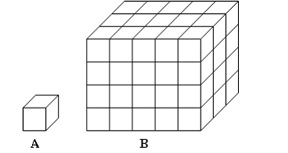
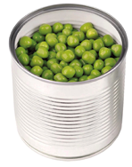
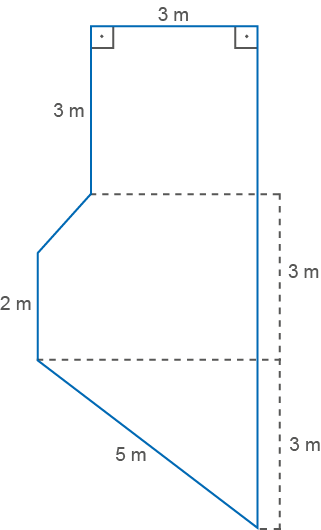
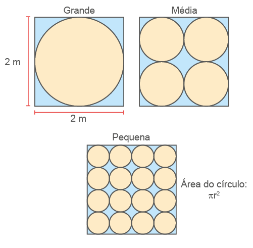
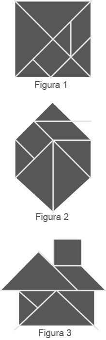
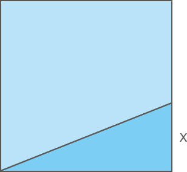
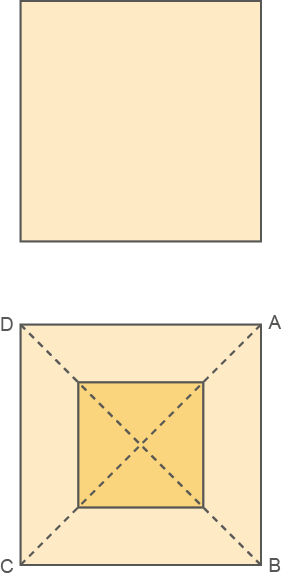
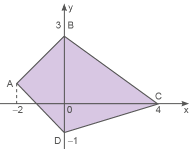
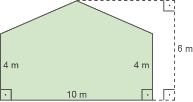
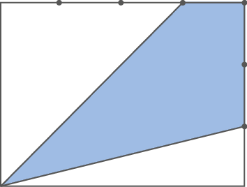

264
Volume de prismas
Estudamos nos anos anteriores que o volume de um objeto é o espaço que ele ocupa. Estudamos também a relação entre o volume e a capacidade, quando um recipiente tem a medida de volume 1 dm³ é capaz de armazenar 1 litro de líquido.
Vejamos um exemplo de cálculo de volume de um sólido:
O Cubo Mágico foi criado pelo húngaro Ernö Rubik, na metade da década de 70, e hoje em dia é um brinquedo famoso no mundo inteiro. Considerado um quebra-cabeças, geralmente possui 6 faces sendo a versão 3 ˣ 3 ˣ 3 a mais comum. Outras versões menos conhecidas são o 2 ˣ 2 ˣ 2, 4 ˣ 4 ˣ 4 e 5 ˣ 5 ˣ 5.
Sabendo que cada aresta do cubo representado mede 5 cm, qual é o seu volume?
O volume de um bloco retangular é dado pelo produto de suas dimensões V = c.l.h, ou seja, a área da base ˣ altura l²*h. Como se trata de um cubo, temos Vcubo = l³ = 53 = 125cm³.
Vejamos outra situação:
“As operárias da abelha melífera (Apis mellifera) vivem em média 45 dias, mas podem chegar até cinco meses de vida em climas muito frios. Os machos são expulsos da colônia por volta de 10 dias de vida e vivem cerca de três semanas no ambiente, mas, caso encontrem uma rainha, morrem logo após a cópula. Já as rainhas podem viver de dois a quatro anos, o que geralmente depende de seu desempenho na postura de ovos.”
Fonte: Associação Brasileira de Estudo das Abelhas. Disponível em: https://cutt.ly/qL2t8aC. Acesso em: 2 jun. 2022.
265
A medida de volume de um prisma é igual ao produto da medida de área da base (Ab) pela medida de comprimento da altura (h).
h
V = Ab ∙ h (unidades de medida de volume)
Lars Karlsson/wikimedia.commons
©CPT
Encontre soluções

a) 36 c) 31
b) 48 d) 52
266
Volume de cilindros
Leia a seguinte notícia:
Novo reservatório de água da zona Leste
será interligado
ao sistema de abastecimento na próxima semana
Reservatório de água. Manaus, AM, 2019.
Previsto para ser inaugurado na primeira quinzena de abril, a nova unidade fica na rua Alecrim, bairro do Jorge Teixeira, ao lado do reservatório de 5 milhões de litros que já existem no bairro.
Com quase 18 metros de altura, o novo reservatório do Jorge Teixeira terá a capacidade de armazenar 7,5 milhões de litros.
As obras vão beneficiar diretamente 107 mil pessoas na zona leste de Manaus, ampliando a reserva de água tratada e reduzindo oscilações na pressão do sistema de abastecimento da região. As novas unidades de reservação da Águas de Manaus ainda devem facilitar a implantação de expansões de redes na área.
Fonte: Águas de Manaus. Disponível em: https://cutt.ly/yL2ypzX. Acesso em 2 jun. 2022.
No 8.º ano vimos como escrever uma equação que permita determinar o volume de um cilindro, dado o raio e a altura:
V = π · r2 · h
267
Encontre soluções

Probabilidade e estatística
- Eventos independentes e eventos dependentes
Estudamos nos anos anteriores como calcular a probabilidade de um evento ocorrer em um experimento aleatório com chances equiprováveis, ou seja, com as mesmas chances de ocorrer. O conjunto formado pelos resultados possíveis é chamado de espaço amostral e que a soma das probabilidades é 1.
Agora, vamos supor as seguintes situações.
Situação 1
No jogo simples, cara ou coroa, consiste em atirar uma moeda ao ar para verificar qual de seus lados ficou voltado para cima após a sua queda. Qual é a probabilidade de uma moeda comum sair “cara”?
Como são duas possibilidades, temos que a probabilidade é
E se o lançador estiver vestindo uma camisa azul, esse fato altera a probabilidade de se tirar “cara”?
268
A probabilidade de se tirar “cara”, sabendo que a pessoa que vai lançar a moeda veste uma camisa azul, continua sendo . Então, o resultado de se lançar uma moeda e da cor da roupa são eventos independentes; saber a cor da roupa não mudou a probabilidade de se tirar “cara”.
Clique aqui
Dizemos que dois eventos são independentes quando o fato de saber que um evento ocorreu não altera a probabilidade do outro.
Situação 2
Um baralho comum tem 52 cartas, sendo 13 de cada naipe. Qual é a probabilidade de sortear o um rei desse baralho?
Como existem 4 reis em um baralho, 1 de cada naipe, a probabilidade de se retirar um rei é de ou .
Considere novamente retirar um rei do baralho. Qual é a probabilidade de sortear um segundo rei desse baralho?
Como existem 3 reis em um baralho, 1 de cada naipe, a probabilidade de se retirar um rei é de ou . Perceba que, neste caso, os eventos são dependentes, uma vez que se um rei for sorteado na primeira retirada, então esse fato vai influenciar na probabilidade de sortear na segunda retirada, já que o espaço amostral foi alterado.
Clique aqui
Dois eventos aleatórios são dependentes quando a ocorrência de um de- les tem efeito na probabilidade de ocorrência do outro evento.
269
relembrE
Na seleção para as vagas deste anúncio, feita por telefone ou correio eletrônico, propunha-se aos candidatos uma questão a ser resolvida na hora. Deveriam calcular seu salário no primeiro mês, se vendessem 500 m de tecido com largura de 1,40 m, e no segundo mês, se vendessem o dobro. Foram bem sucedidos os jovens que responderam, respectivamente:

270

As sobras de material da produção diária das tampas grandes, médias e pequenas dessa empresa são doadas, respectivamente, a três entidades: I, II e III, para efetuarem reciclagem do material. A partir dessas informações, pode-se concluir que:

Se o lado AB do hexágono mostrado na figura 2 mede 2 cm, então a área da figura 3, que representa uma “casinha”, é igual a:
271


Sendo CB perpendicular a AD e sabendo-se que AB = 4 cm e DB = 3 cm, a área da região sombreada na figura, em cm2, é igual a:

272


Sabendo-se que cada lata contém 2 litros de tinta, a menor quantidade de latas que deve ser comprada para se pintar toda a parede é:

A área do quadrilátero destacado é:

Sabendo-se que, na divisão da área do terreno A pela área do terreno B, o quociente é igual a 1,6 e o resto é zero, pode-se afirmar que a soma dos perímetros dos dois terrenos é igual a: